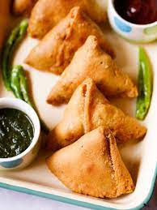

Samosa

Flaky and crunchy fried samosa are one of the most popular street food snack in North Indian cuisine. They feature a pastry-like crust but are filled with savory potatoes and peas for a hearty, delicious snack. This step-by-step guide will help you to make the flakiest, tastiest, absolutely best Punjabi samosa recipe from scratch!
Ingredients
- 2 cup all purpose flour
- 1 teaspoon cumin seeds
- 1 teaspoon ginger
- 1 teaspoon raisins
- 5 potato
- 1 teaspoon coriander powder
- 1 teaspoon red chilli powder
- 1 teaspoon kasoori methi leaves
- 1 teaspoon carom seeds
- 1/4 cup water
Steps
- pinch a ball sized dough and grease with oil.
- roll the dough into oval shape.
- now cut it horizontally, diving into 2 equal portions using a knife.
- grease with water and make cone.
- stuff 2 tbsp of prepared samosa masala into the cone.
- grease little water on the edges.
- close and seal tightly by pressing firmly.
- deep-fry the samosa on a low flame. alternatively bake at 180 degree celcius for 40 minutes.
- stir occasionally, frying the samosa on low flame for atleast 15 minutes.
- once the aloo samosa turns golden and crisp, drain off over kitchen paper.
- finally, enjoy aloo samosa with green chutney and tamarind chutney.